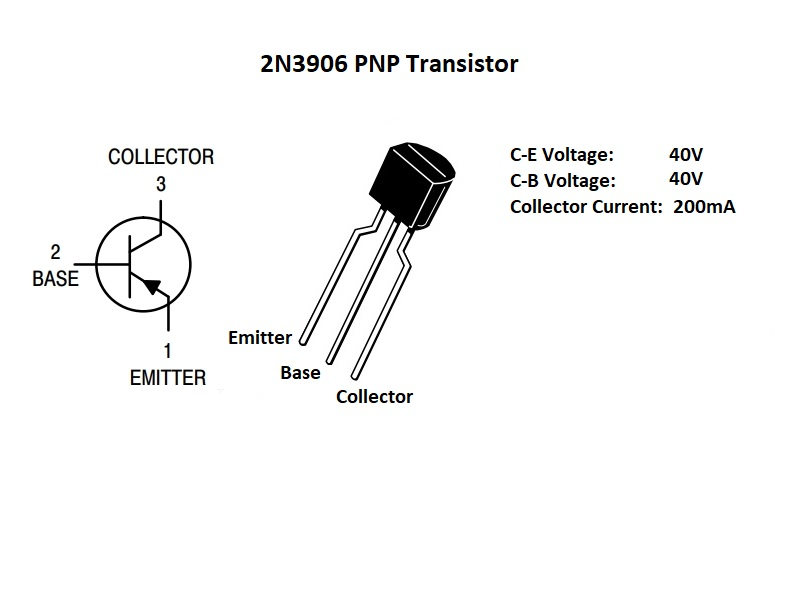

Die Luge die Externalles Druck ~ 14.02.2020
Letzt nacht Ich hatte ein langes Gespräch mit mir. Die meist wichtig
was ich gelernt hatt war:
- Es ist nicht wichtig zu beweisen, wie schlau ich bin.
- Es ist nicht wichtig "erfolgreich/reich" zu sein.
Diese ist ein neue entdeckung fur mich weil zufor jetzt es war ein
unsichbar verlangen. Ich wird niemals sagt das ich will beweise das ich
schlau bin. Vielleich es ist neue. Aber vor kruzum meien ziel war,
mache viele geld, erfolg hab, und mache es mit intellekt nicht nur
dumm wiederholt strategie. Ich meine, ich wird immer ein intellektualles
mench sein. Die druck meine intelligenze zu beweisen aber, ist nicht
internal.
Es ist druck vielleich von eltern oder wo immer. Aber ich hat gelernt
in diese gesprache das diese Dieser Wunsch widerspricht der für mich wichtigeren
Rationalität. IQ ohne rationalitat ist nicht. Es ist gefarlich sogar.
Jetzt wann ich diese ideal los lassen. Ich full ein bisschen mehr frei.
Wie, ok ich konnen in IT job bekommen UND nicht wirklich fuhl druck die
schlaust mencht in die zimmer zu sein. UND nicht die durck, sogar merh geld
zu verdiene. Das ist gut.
Micro Unendlichkeit ~ 13.02.2020
Ein andere wichtig Paradox philosophie ich hab entwickelt ist
'Mirco-Unendlichkeit'. Das ist wann sie hab etwas serh klein
entdeckt oder entwickelt. Es ist klein aber die bedeutung ist
nicht klein, es bedeutet unendlisch neue moglichkeiten. zbs.
Die Transistor:

Diese ist ein sehr gut bespeile
fur ein mirco unendlichkeit. Es ist ein gerat das hat:
- Ein externals netzteil fur spannung
- Ein steurenspannung (entweder ein signal oder nur gleichstrom)
Es ist ein "leistungsverstarker" welch beduetet wircklich nur das
es nimmt ein signal und mit hilf von ein gross spannungsquell es
mache ein duplikate von die signal mit grosser leistung/strom/spannung.
Mit diese einfach eigenschafts und die basic digital shaltkreis theory
, computeren wie in unsere hausen und Handy und meistens von computer
wissenschaft war geboren.
Die entdeckung von diese unendlich moglischkeiten muss mit
etwas klein angefang.
Abgeschlossener Teilen ~ 12.02.2020
Abgeschlossener ist moglischerweise einer die meist wichtig
kreativitat philosophie fur ein INTP. Es ist ein Paradox und
das ist wichtig.
Die grundlagen problem diese idee wird losung
ist die gewonheit standig dingen zu start aber niemals erledigt.
Diese ist ein verschwinden von energie und zeit. Es ist ein
lernen erfahrung aber langfristig noch nicht optimal. Die losung ist
bauen kleine aber abgeschlossener Teilen. Das bedeutet, wann sie
wollen ein spiele zu entwickeln, sie konnen entweder ein serh klein spiele
in eine tag machen, ODER sie konnen einfach ein nutzvol teil von
ein speile entwickeln. Die teil ist nur ein teil. Aber es ist
abgeschlossen. Das bedeutet es hat ein funktion.
Es funktioniert.
Und sie konnen es nutzen sofort fur etwas anderes. Diese blog ist ein
abgeschlossener teil. Oder wenigstens das ist miene hoffe. Es ist klein. Es ist
fertig. Und ich konnen es und diese strukture, fur viele andere sachen nutzen.